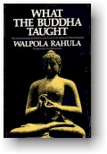

|
BuddhaSasana Home Page |
Vietnamese, with Unicode Times font |
|  |
ÐỨC PHẬT ÐÃ DẠY NHỮNG GÌ
Hòa thượng WALPOLA RAHULA Nguyên tác: "What The
Buddha Taught" |
|
Chương Ba
DIỆU ÐẾ THỨ
HAI: TẬP Chân lý thứ hai là chân lý về sự phát sinh hay nguồn gốc của dukkha (Dukkhasamudaya - ariyasacca, Khổ diệt thánh đế). Ðịnh nghĩa danh tiếng và thông dụng nhất về chân lý thứ hai, được tìm thấy trong rất nhiều bản kinh nguyên thủy như sau:
Chính sự khao khát, ham muốn, dục vọng, thèm thuồng, xuất hiện dưới nhiều hình thức - đã làm phát sinh mọi hình thái khổ đau và sinh tử. Nhưng không nên xem đấy là nguyên nhân đầu tiên, vì theo Phật, mọi sự phụ thuộc lẫn nhau nên không thể có nguyên nhân đầu tiên. Ngay cả khát ái được xem như nguyên nhân hay nguồn gốc của dukkha, cũng tùy thuộc vào một yếu tố khác để phát sinh, đấy là thọ (vedanà)[2], và thọ phát sinh tùy thuộc vào xúc (phassa) cứ thế nối tiếp nhau trên một vòng tròn mà thuật ngữ Phật học gọi là Duyên khởi (Paticcasamuppàda) sẽ được bàn sau[3]. Như thế ái không phải là nguyên nhân đầu tiên hay độc nhất của sự phát sinh ra khổ. Nhưng đấy là nguyên nhân trực tiếp và rõ rệt nhất[4]. Chính vì vậy mà ngay trong những bản kinh Pàli, Tập đế hay nguồn gốc Khổ được định nghĩa là những bất tịnh sơ hở (kilesà sàsavà dhammà: phiền não hữu lậu pháp) ngoài khát ái luôn được xem như yếu tố chính[5]. Ở đây ta chỉ cần nhớ rằng trọng tâm của ái là ý niệm sai lầm về ngã do vô minh mà có. Khát ái không chỉ là ham muốn, bị trói buộc vào khoái lạc giác quan, tài sản, quyền lực, mà còn là ham muốn, bị trói buộc vào những tư tưởng, lý tưởng, quan điểm, lý thuyết, khái niệm và niềm tin (dhammatanhà, pháp ái)[6]. Theo sự phân tích của Phật, tất cả tranh chấp trên đời, từ gây gỗ trong gia đình cho đến đại chiến giữa các quốc gia, đều có gốc rễ ở khát ái này[7]. Theo quan điểm ấy, mọi vấn đề kinh tế, chính trị và xã hội đều có cội rễ là lòng tham vị kỷ. Những chính khách muốn dàn xếp những tranh chấp quốc tế mà chỉ bàn chiến tranh và hòa bình trong lãnh vực chính trị, kinh tế là chỉ chạm cái vỏ ngoài, không bao giờ động đến cội gốc đích thực của vấn đề. Như Phật đã dạy tôn giả Ratthapàla: "Thế gian thiếu thốn, khát khao và nô lệ cho dục vọng (tanhàdàso)." Ai cũng nhận rằng mọi tai họa trên đời đều do dục vọng ích kỷ gây nên. Ðiều này không khó hiểu. Nhưng làm sao dục vọng, khát ái lại có thể đưa đến tái sinh, sự có mặt trở lại (ponobhavikà), là vấn đề không phải dễ lãnh hội. Chính vì vậy ta phải bàn đến khía cạnh triết lý sâu sắc của chân lý thứ hai, trong tương quan với khía cạnh triết lý của Diệu đế thứ nhất. Ta cần có vài ý niệm về thuyết Nghiệp và Tái sinh. Có bốn thức ăn (àhàrà) theo nghĩa nguyên nhân hay "điều kiện" (duyên) cần thiết cho hữu tình tiếp tục sống và tồn tại: Ðoàn thực (kabalinikàràhàra): thức ăn vật chất thông thường; Xúc thực (phassàhàra): sự tiếp xúc của giác quan, kể cả ý thức, với ngoại giới; Thức thực (vinnànàhara); và Tư niệm thực (manosancetanàhàra): ý chí hay ý muốn của tâm[8]. Trong bốn điều kiện trên, thì cái cuối cùng, tư niệm, chính là ý chí muốn sống, muốn tồn tại, tái sinh, tương tục, tăng trưởng[9]. Nó tạo nên nguồn gốc của sự sống và tiếp tục, tiến tới trước bằng những nghiệp thiện, bất thiện (kusalàkusalakamma)[10]. Nó cũng chính là ý hành hay tư (cetàna)[11]. Ta đã thấy trước đây rằng ý chí là nghiệp[12], như chính Phật đã định nghĩa. Nói đến tư niệm vừa kể trên, Phật đã dạy: "Khi người ta hiểu tư niệm thực, người ta sẽ hiểu được ba hình thức khát ái"[13]. Như thế ái, ý hành, tư niệm và nghiệp đều có cùng một nghĩa. Ðó là dục vọng, ý chí muốn sống, muốn tồn tại, muốn tái sinh, muốn trở thành, muốn tăng trưởng, muốn tích lũy không ngừng. Ðó là nguyên nhân phát sinh ra khổ. Dục vọng ấy được nằm trong hành uẩn, một trong năm uẩn cấu tạo nên một chúng sinh[14]. Ðây là một trong những điểm chính yếu và quan trọng nhất của giáo lý Phật. Vì vậy chúng ta phải thận trọng để ý và nhớ rõ rằng nguyên nhân, mầm mống của sự phát sinh dukkha nằm ngay trong dukkha chứ không ở đâu bên ngoài. Ðây là ý nghĩa của câu danh tiếng thường được thấy trong các nguyên bản Pàli:
"Yamkincisamudayadhammam sabbam tam
niroshadhammam. Một người, một vật, một hệ thống lý thuyết, khi đã có bản chất của sự xuất sanh, biểu hiện, thì cũng có luôn trong nó bản chất, mầm mống của sự chấm dứt và hủy diệt. Như thế, vì dukkha (ngũ uẩn) có trong nó bản chất của sinh nên cũng có luôn trong nó bản chất của diệt. Ðiểm này sẽ được bàn trở lại trong phần nói về Diệu đế thứ ba, Diệt (nirodha). Danh từ Pàli kamma hay Sanskrit karma (ngữ căn kr nghĩa là làm) có nghĩa hành động, làm. Nhưng trong lý thuyết đạo Phật về nghiệp, nó mang một ý nghĩa đặc biệt: nó chỉ có nghĩa là những hành động cố ý, không phải tất cả mọi hành động. Nó cũng không có nghĩa là hậu quả của hành động như nhiều người dùng một cách sai lạc. Trong thuật ngữ Phật học, Nghiệp không bao giờ có nghĩa là hậu quả, hậu quả của nghiệp được gọi là nghiệp quả (kammaphala) hay dị thục (vipàka). Ý chí có thể tương đối thiện hay ác. Bởi thế nghiệp có thể thiện hay ác một cách tương đối. Nghiệp thiện (kusala) phát sinh thiện quả, bất thiện (akusala) phát sinh ác quả. Khát ái, ý chí, nghiệp dù thiện hay ác đều có hậu quả là một năng lực: năng lực tiếp tục, theo chiều hướng thiện hoặc ác. Nhưng thiện ác đều tương đối, đều ở trong vòng luân hồi (samsàra). Một vị A-la-hán dù có hành động cũng không dồn chứa nghiệp, vì đã giải thoát khỏi tà kiến hay quan niệm sai lầm về ngã, khỏi khát ái muốn trở thành, muốn tiếp tục, khỏi mọi phiền não sơ hở khác (kilesà sàsavà dhammà, phiền não hữu lậu pháp). Ðối với vị ấy, không còn tái sinh. Không nên lầm lẫn thuyết nghiệp báo với cái gọi là "đạo đức công bằng " hay "thưởng phạt" ý tưởng về đạo đức công bằng hay thưởng phạt phát sinh do quan niệm có một thực thể tối cao, một thượng đế ngồi phán xét, ban luật lệ và phân định chính tà. Danh từ "công lý" hồ đồ và nguy hiểm, nhân danh nó nhiều tai hại đã đến cho nhân loại hơn là lợi ích. Lý thuyết về nghiệp là luật nhân quả, hành động và phản ứng. Nó trình bày một định luật tự nhiên, không dính líu gì đến ý niệm công bằng thưởng phạt. Mọi hành động do ý muốn đều phát sinh kết quả hay hậu quả của nó. Nếu một nghiệp thiện phát sinh quả lành và một nghiệp ác phát sinh quả dữ, thì đấy không phải là sự công bằng hay thưởng phạt do một quyền năng nào ngồi phán xét rồi ban lệnh, mà đấy chỉ do bản chất của nghiệp, luật lệ của nghiệp là vậy. Ðiều này không khó hiểu. Nhưng điều khó hiểu là, theo thuyết nghiệp báo, những hậu quả của một hành vi cố ý có thể tiếp tục biểu hiện cả trong một đời sống về sau. Vì vậy ta lại phải hiểu theo Phật giáo, chết nghĩa là gì. Trên đây ta đã thấy rằng con người chỉ là một sự kết hợp những sức mạnh hay năng lượng vật lý và tâm linh. Cái ta gọi chết chỉ là sự chấm dứt hoàn toàn những vận hành của cơ thể vật lý. Nhưng những sức mạnh, năng lực kia có cùng chấm dứt với vận hành của thân xác hay không? Phật giáo bảo "Không" ý chí, dục vọng, khát ái muốn tồn tại, muốn tiếp tục muốn trở thành, là một sức mạnh ghê gớm điều động toàn bộ những đời sống, những sự sinh tồn, điều động toàn thế giới. Ðây là sức mạnh lớn lao nhất, năng lực hùng mạnh nhất trong hoàn vũ. Theo Phật giáo, sức mạnh này không dừng nghỉ cùng với sự chấm dứt vận hành của thân xác mà ta gọi là chết, nó vẫn tiếp tục biểu hiện dưới một hình thức khác, phát khởi sự tái hiện hữu mà người ta gọi là tái sinh luân hồi. Bây giờ một câu hỏi khác nảy sinh trong trí: "Nếu không có một thực thể trường cửu bất biến như ngã hay linh hồn (àtman) thì cái gì có thể tái hiện, tái sinh sau khi chết?" Trước khi bàn đến đời sống sau khi chết, ta hãy xét đời này là gì, và nó đang tiếp tục ra sao. Cái ta gọi đời sống, như đã nói nhiều lần, chỉ là sự kết hợp của năm uẩn, một phối hợp những năng lực vật lý tâm linh. Những uẩn này luôn luôn biến chuyển, không còn như cũ trong hai thời khắc tiếp nhau. Chúng sinh ra rồi diệt trong từng sát na. "Mỗi lúc các uẩn sinh, suy tàn và diệt, hỏi các Tỳ kheo, là mỗi lúc các ông sinh ra, già và chết" [16]. Như thế, ngay cả bây giờ, trong đời sống này, chúng ta cũng được sinh ra và chết đi trong từng giây phút, thế mà chúng ta vẫn tiếp tục. Nếu ta có thể hiểu rằng trong đời này mình có thể tiếp tục không cần có một bản thể trường cửu bất biến như ngã hay linh hồn, thì tại sao không hiểu được rằng sau khi thân xác không còn vận hành, những năng lực kia vẫn có thể tiếp tục mà không cần đến một bản ngã hay linh hồn? Khi thân xác vật lý này không còn hoạt động được, khi ấy những năng lực không chết theo với nó, mà tiếp tục nhận một hình dạng khác, mà ta gọi là một đời khác. Trong một đứa trẻ, mọi khả năng vật lý, tâm linh và tri thức đều yếu ớt, nhưng nó có sẵn tiềm năng để trở nên một người lớn đầy đủ. Những năng lực vật lý và tâm linh đã làm thành cái mà ta gọi là linh hồn ấy, có sẵn trong chúng khả năng nhận một hình thức mới, tăng trưởng và thâu thập sức mạnh cho đến khi đầy đủ. Vì không có bản thể trường cửu bất biến nên không có gì đi từ một lúc này đến lúc kế tiếp. Bởi thế, hiển nhiên không có cái gì trường cửu hay bất biến có thể đi hay luân hồi từ đời này đến một đời sau. Ðấy là một chuỗi tiếp tục không gián đoạn, nhưng biến đổi từng giây phút. Chuỗi ấy thật ra không là gì ngoài ra sự chuyển dịch. Nó giống như một ngọn lửa cháy thâu đêm: không phải cùng là một ngọn lửa, cũng không phải khác. Một đứa trẻ lớn lên thành một ông già sáu mươi: dĩ nhiên ông già lục tuần không phải là một với đứa trẻ sáu mươi năm về trước, nhưng cũng không phải khác. Cũng thế, một người chết ở đây và tái sinh ở một nơi khác không phải cùng là một người ấy, cũng không phải khác (na ca so na ca anno). Ðấy là sự tiếp tục của cùng một chuỗi. Sự khác nhau giữa chết, sống chỉ là một sát na tâm (thời khoản rất ngắn cho một niệm khởi lên): tâm cuối cùng trong đời này định đoạt tâm đầu tiên trong đời sau, nhưng kỳ thực chỉ là sự tiếp nối của cùng một chuỗi liên tục. Ngay cả trong đời này cũng thế, một tâm niệm khởi lên định đoạt tâm niệm tiếp theo. Bởi thế theo Phật, đời sau không phải là cái gì huyền bí, và Phật tử không bao giờ thắc mắc về vấn đề này. Bao lâu còn khát ái trở thành, thì sinh tử luân hồi vẫn tiếp tục. Nó chỉ có thể ngừng khi nào sức mạnh điều khiển nó là khát ái bị chặt đứt nhờ trí tuệ thấy rõ Thực tại, Chân lý, Niết-bàn. Ghi chú: [1] Mhvg (Alutgama, 1922), p.9, S5(PTS), p.421 và các chỗ khác trong sách. [2] Vedanàsamudayà tanhàsamudavo. M I (PTS), p. 51. [3] Xem Chương Sáu. [4] Abhisamuc, p.43, pràdhànyràtha, sarvatragàrtha. [5] Xem Vibh. (PTS), p.106 ff. [6] M I (PTS), p.51, S II p.72, Vibh, p. 280 [7] M I. p.86 [8] M I, p.48 [9] Một điều thú vị để so sánh "sự thúc đẩy của tâm ý" này với "libido" trong tâm lý học tân thời của Freud. [10] MA I (PTS), p.210 [11] Manosancetanà'ti cetanà eva vuccati. MA I (PTS), p.209. [12] Xem Chương Hai, về uẩn thứ tư. [13] S II (PTS), p.100. Ba hình thức của khát ái: 1) Dục ái: khao khát lạc thú giác quan; 2) Hữu ái: khao khát sinh tồn và trở thành 3) Diệt ái: khao khát hư vô, không hiện hữu như đã nói trong định nghĩa samudaya "tập khởi của khổ" ở trên. [14] Xem Chương Hai, về Ngũ uẩn.. [15] M III (PTS), p. 280, SIV, pp. 47, 107Vp. 423 và những chỗ khác. [16] Prmj I (PTS), p. 78. "Khandhesu jayamànesu jìyamànesu mìyamànesu ca khane khane tvam bhikkhu jàyase ca jìyase ca mìyase ca". Câu này được trích trong luận Paramatthajotikà như là những lời của chính đức Phật. Cho đến bây giờ biên giả chưa tìm được đoạn này trong nguyên bản của nó. -ooOoo- Ðầu trang | Mục lục | 01 | 02 | 03 | 04 | 05 | 06 | 07 | 08 | 09 |
Chân thành cám ơn Đại đức Giác Đồng đã gửi tặng bản vi tính (Bình Anson, 09-2002).
[Trở
về trang Thư Mục]
updated:
01-10-2002